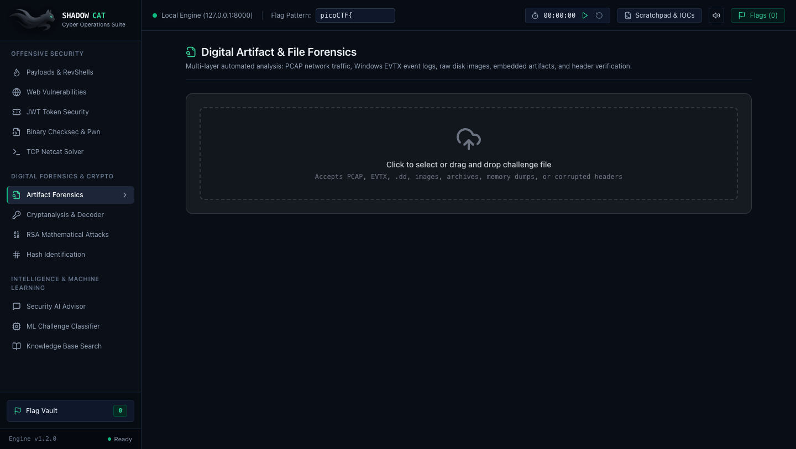

Get Started with SHADOW CAT in 15 Seconds
Choose your operating system below, paste one command into your terminal, and your local suite will automatically launch in your browser. No Docker required, no root privileges needed.
Click your platform tab below. Commands adapt automatically for your architecture.
Click the copy button and press Enter in Terminal or PowerShell. Takes ~15s.
Browser opens automatically to http://localhost:8000.
curl -fsSL https://raw.githubusercontent.com/thanakorn30006/shadowcat/main/install.sh | bash
The installer clones the suite into ~/shadowcat, creates an isolated Python virtual environment (~/shadowcat/backend/venv), installs dependencies without touching your system Python, and launches the single-port web interface automatically.
[VERIFIED LOCAL UI PREVIEW]
Upon running the install command, your local FastAPI daemon and single-port React cockpit mount within 15 seconds:

[OFFLINE ARCHIVES] Standalone ZIP / Tarball Releases
Air-gapped lab or CTF competition arena with no internet access? Download pre-packaged self-contained archives to transfer via USB or secure drive.
Universal ARM64 & x86_64 portable bundle.
Self-contained POSIX archive for Kali & Ubuntu.
Windows PowerShell & CMD package with launcher.
[FAQ] Frequently Asked Questions
Clear, simple answers to common setup questions.
[Q] Do I need Administrator or Root permissions?
No! SHADOW CAT installs entirely in user space (~/shadowcat). You do not need sudo or Administrator privileges.
[Q] How do I launch it after closing the terminal?
Simply open your terminal and type shadowcat. Or navigate to cd ~/shadowcat && ./run.sh.
[Q] Does it require an internet connection?
Only during the 15-second initial download. Once downloaded, SHADOW CAT operates 100% offline and air-gapped. No data is sent to the internet.
[Q] How do I completely uninstall it?
Run rm -rf ~/shadowcat ~/.local/bin/shadowcat. That's it! Because everything is isolated, no traces are left on your computer.
Looking for compiler flags, system service daemons, or custom ports? Read Section 1 of the Technical Documentation →